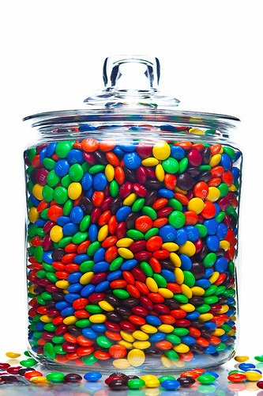

1 Quantos doces tenho na tigela?
1.1 Objetivo da atividade
O jogo aborda um dos conceitos mais importantes da estatística, a amostra. Utilizando técnicas de amostragem com reposição, o objetivo do jogo é estimar quantas balas de uma determinada cor têm dentro da tigela.
1.2 Descrição da atividade
O jogador deverá retirar uma amostra de dentro do pote, contendo diferentes tipos de balas, contar a quantidade de balas de uma determinada cor (o “mentor” deverá escolher) e depois ele fará a proporção, de acordo com o tamanho da amostra. Se pessoa preferir, pode repetir esse experimento quantas vezes for necessário, utilizando assim, técnicas de amostragem com reposição. Dessa forma, o jogo estimula a pessoa a conhecer características da população estudando a amostra. Lembrando que, quanto maior o tamanho da amostra, mais representatividade ela terá da população.
1.3 Construção
A tigela com os doces deverá conter diferentes tipos de balas (com cores diferentes), como mostra a figura a seguir:

Dessa forma, será possível descobrir características da população estudando a amostra. Por exemplo, quantas balas vermelhas têm dentro do pote? Perguntas deste tipo serão respondidas e explicadas nos tópicos a seguir.
1.4 Guia para execução da atividade
O intuito da brincadeira é estimar quantas balas rosas, por exemplo, têm dentro da tigela, introduzindo o raciocínio estatístico. Ela estimula o aluno a desenvolver uma atividade de modo ativo, observar o que acontece, pensar sobre a atividade e consolidar a nova informação, relacionando-a com seu conhecimento anterior.
Inicialmente, o aluno deverá pegar uma parte das balas que estarão dentro do pote (geralmente a medida de uma ou duas mãos fechadas). Logo após, ele deverá realizar a contagem total de balas que ele pegou (tamanho da amostra), contar a quantidade de balas rosas, por exemplo, e depois fazer a proporção, que nada mais é do que dividir a parte (o que eu quero descobrir) pelo todo (o que eu tenho). Por exemplo, suponha que dentro do pote tenha 50 balas rosas, de 200 balas no total. Ao retirar uma amostra de 40 balas, a pessoa obteve 10 balas rosas. Ou seja, uma proporção de \(\frac{10}{40} = 0.25\). Com isso, ela poderia inferir que a amostra está representando bem a população, já que \(\frac{50}{200} = 0.25\), ou seja, se ela pegar a proporção que calculou na amostra e multiplicar pelo total da população, ela encontraria o total de 50 balas rosas, que é a realidade.
Entretando, devemos pensar da seguinte forma: será que a amostra que eu peguei realmente representa a população? Será que ela não está viciada, ou seja, tem muito mais balas de uma determinada cor do que de outras? Para evitar que problemas assim ocorram, devemos realizar o experimento citado acima mais de uma vez.
A figura a seguir mostra, na prática, como realizamos essa atividade.

Como visto acima, as pessoas retiraram uma amostra da tigela e estavam separando as balas por cor para realizar uma contagem melhor. Dessa forma, fica mais claro como é feito o cálculo da proporção e, assim, estimar o número de balas de determinada cor que existe dentro do pote.
1.5 Detalhes técnicos
1.5.1 População e Amostra
Uma população ou universo é um conjunto de pessoas, itens ou eventos sobre os quais você quer fazer inferências. Nem sempre é conveniente ou possível examinar todos os membros de uma população inteira. Por exemplo, não é viável pegar todos os eleitores brasileiros para fazer uma pesquisa eleitoral, porque o número de eleitores é muito elevado e levaria anos para entrevistar todo mundo. Além do tempo gasto, muito dinheiro seria necessário para realizar tal pesquisa.
No entanto, é possível pegar uma amostra (subconjunto da população) que seja representativa do grupo a ser pesquisado, usando dados públicos. O objetivo é escolher um número limitado de pessoas, cujas características sejam parecidas com a do grupo maior que se queira pesquisar. Para que a pesquisa esteja correta, a amostra precisa corresponder ao universo população) dentro de alguns critérios (escolaridade, idade, gênero, etc). Esses critérios são chamados de variáveis.
Uma amostra é um subconjunto de pessoas, itens ou eventos de uma população maior que você coleta e analisa para fazer inferências. Para representar a população bem, uma amostra deve ser coletada aleatoriamente e ser adequadamente grande. Se a amostra é aleatória e grande o suficiente, você pode usar as informações coletadas a partir da amostra para fazer inferências sobre a população.
1.5.2 Amostragem
Amostragem é um conjunto de técnicas utilizadas para descrever e selecionar amostras, de forma aleatória ou não, e é um fator responsável pela determinação da representatividade da amostra. Quando queremos colher informações de um ou mais aspectos de uma população grande, verifica-se, na maioria das vezes, que é praticamente impossível fazer um levantamento do todo. Assim, tem-se a necessidade de pesquisar apenas uma parte dessa populção. A amostragem se baseia, então, em escolher uma parte (amostra) da população, de tal forma que ela seja a mais representativa possível do todo e, a partir dos resultados obtidos, inferir os resultados sobre a população total.
Dentre todas as técnicas de amostragem, a mais utilizada é a Amostragem Aleatória Simples (AAS). Neste caso, todos os indivíduos da população têm a mesma chance (probabilidade) de serem escolhidos ao acaso (de forma aleatória), normalmente através de um sorteio. O sorteio é uma técnica de seleção aleatória de indivíduos, que garante a probabilidade igual para todos os elementos. Existem dois métodos dentro da AAS, que são listados abaixo:
\(\bullet\) Com reposição: o mesmo elemento da população pode ser amostrado mais de uma vez. A probabilidade de seleção não se altera.
\(\bullet\) Sem reposição: cada elemento da população é amostrado uma única vez. A probabilidade de seleção se altera.
Do ponto de vista da quantidade de informação contida na amostra, a amostragem sem reposição é mais adequada. No entanto, a amostragem com reposição conduz a um tratamento teórico mais simples, pois ele implica que tenhamos independência entre as unidades selecionadas. Portanto, na maioria dos casos de AAS, estamos nos referenciando a uma amostragem aleatória simples com reposição, que é o caso desse jogo.